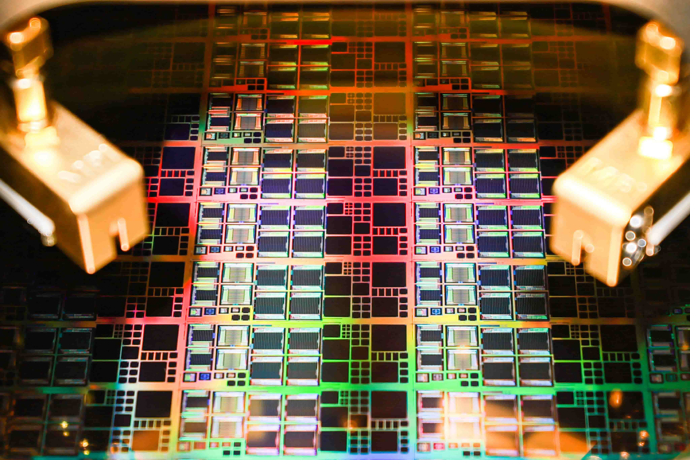
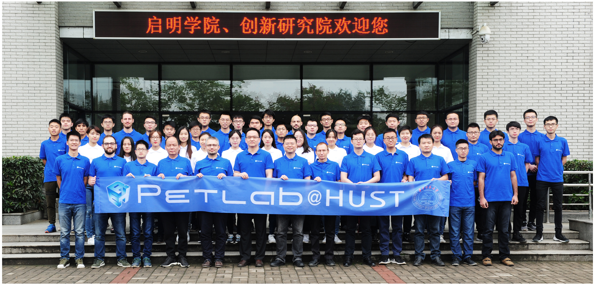

科学研究
从光子出发，洞悉生命精微图景
数字 PET 实验室布局底层核心技术专项，深耕全数字 PET 技术创新，推动通用成像架构向专用化系统、精准诊疗方案迭代演进，持续拓展 PET 设备在临床诊疗与前沿科研领域的应用边界。

科学研究
数字 PET 实验室以探索性基础科学为研究主线，主攻高灵敏探测、超高时间分辨、动态定量成像等关键核心技术。上述技术突破可显著提升微弱信号探测能力与定量成像精度，为精准分子影像研究筑牢底层技术支撑。

核心能力
数字 PET 实验室搭建具备国际领先水平的科研平台，推动学界、科研机构与产业端构成的全数字 PET 创新生态开展跨领域协同攻关。该平台可支撑一套标准化、严谨化、可溯源的科研体系，持续拓展可规模化落地的全数字 PET 应用场景。

科研团队
数字 PET 实验室汇聚硬件、软件及应用方向科研人员，共同完成全数字 PET 成像系统的研发、性能验证与运行调试；同时依托系统性能优势挖掘多元应用场景，适配现有临床需求与前沿新兴研究方向。
科研合作
以愿景为光 共探科学前沿新境
本实验室诚挚邀约全球科研同仁携手开展前沿探索，共同推进交叉学科创新联合研究。